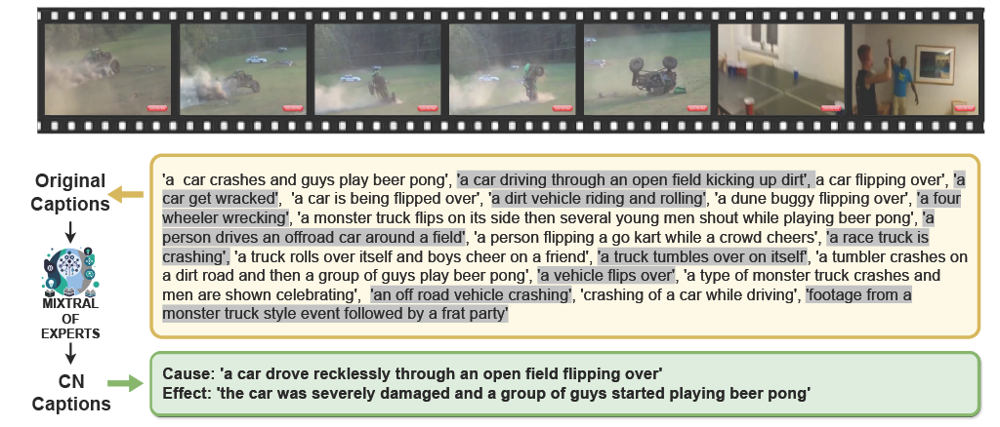
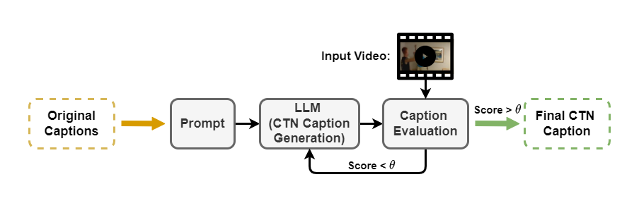
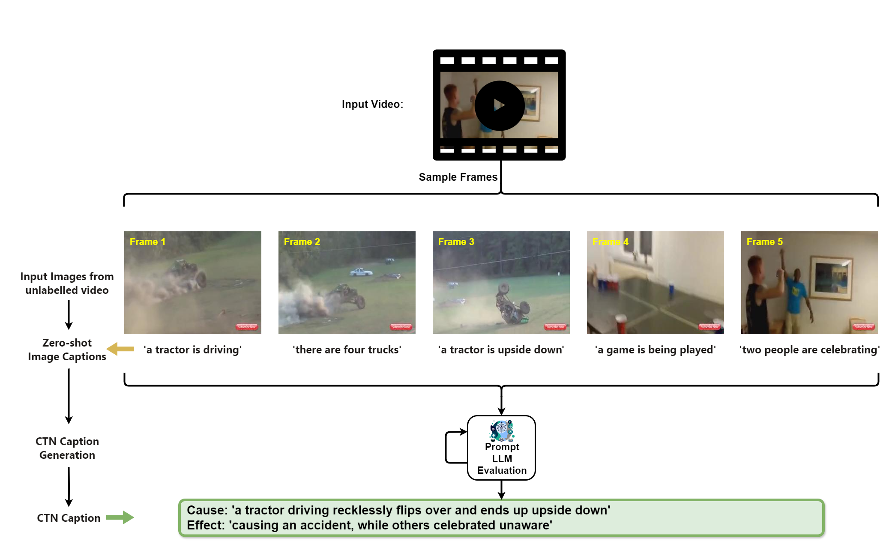
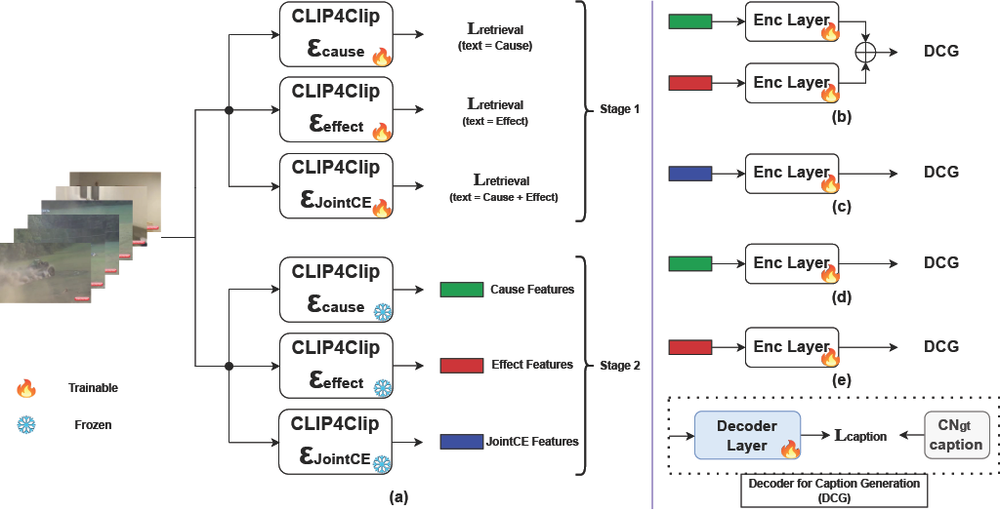
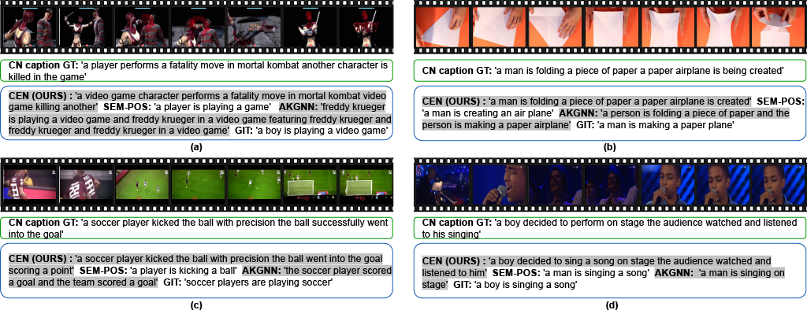

NarrativeBridge: Enhancing Video Captioning with Causal-Temporal Narrative
A new approach to video captioning grounded in cause, effect, and time — introducing the Causal-Temporal Narrative benchmark and the Cause-Effect Network architecture.
From frame descriptions to causal narrative.
Existing video captioning benchmarks and models lack coherent representations of causal-temporal narrative, which is sequences of events linked through cause and effect, unfolding over time and driven by characters or agents. This lack of narrative restricts models' ability to generate text descriptions that capture the causal and temporal dynamics inherent in video content. To address this gap, we propose NarrativeBridge, an approach comprising of: (1) a novel Causal-Temporal Narrative (CTN) captions benchmark generated using a large language model and few-shot prompting, explicitly encoding cause-effect temporal relationships in video descriptions, evaluated automatically to ensure caption quality and relevance and validated through human evaluation; and (2) a dedicated Cause-Effect Network (CEN) architecture with separate encoders for capturing cause and effect dynamics independently, enabling effective learning and generation of captions with causal-temporal narrative. Extensive experiments demonstrate that CEN significantly outperforms state-of-the-art models, including fine-tuned vision-language models, and is more accurate in articulating the causal and temporal aspects of video content than the second best model (GIT): 17.88 and 17.44 CIDEr on the MSVD and MSR-VTT datasets, respectively. Cross-dataset evaluations further showcase CEN's strong generalization capabilities. The proposed framework understands and generates nuanced text descriptions with intricate causal-temporal narrative structures present in videos, addressing a critical limitation in video captioning.
Try the prompt.
You can also try the example prompt used for CTN captions generation by visiting this link.
You are an advanced language model tasked with generating causal-temporal narrative captions for a video. However, you cannot directly access the video itself. Instead, you will be provided with a series of captions that outline the key events and scenes in the video. Your task is to generate a concise Cause and Effect scenario, based on the information provided in the descriptive captions. Be careful, your generated Cause and Effect statements should fulfill the following requirements:
1. Your narrative should be grounded in the information provided by the descriptive captions.
2. Cause and Effect scenario is relevant.
3. It should not introduce any new events or details not mentioned.
4. Avoid implying conclusions.
5. Maintain temporal consistency with the provided captions.
6. Use plain English and direct sentences.
7. Cause and Effect statements each limited to a maximum of 15 words.
8. Do not include any additional text before or after the JSON object.
Here are the examples of Cause and Effect:
[Examples]:
[{'Cause': 'the student overslept due to a malfunctioning alarm clock', 'Effect': 'missed catching the bus to school'}, {'Cause': 'she absentmindedly skipped applying moisturizer after taking a long hot shower', 'Effect': 'her skin became dry and flaky'}, {'Cause': 'he carelessly neglected taking his prescribed allergy medication', 'Effect': 'suffered a severe sneezing fit'}, {'Cause': 'the exhausted soccer player recklessly fouled an opponent in the penalty area', 'Effect': 'the opposing team was awarded a crucial penalty kick'}, {'Cause': 'due to unforeseen road closures they found themselves stuck in heavy traffic', 'Effect': 'missed out on experiencing the opening act of the concert'}]
Now please generate only one Cause and Effect presented in a JSON format based on the following descriptive captions.
[Descriptive Captions]:
1. 'a car crashes and guys play beer pong'
2. 'a car driving through an open field kicking up dirt'
3. 'a car flipping over'
4. 'a car get wracked'
5. 'a car is being flipped over'
6. 'a dirt vehicle riding and rolling'
7. 'a dune buggy flipping over'
8. 'a four wheeler wrecking'
9. 'a monster truck flips on its side then several young men shout while playing beer pong'
10. 'a person drives an offroad car around a field'
11. 'a person flipping a go kart while a crowd cheers'
12. 'a race truck is crashing'
13. 'a truck rolls over itself and boys cheer on a friend'
14. 'a truck tumbles over on itself'
15. 'a tumbler crashes on a dirt road and then a group of guys play beer pong'
16. 'a type of monster truck crashes and men are shown celebrating'
17. 'a vehicle flips over'
18. 'an off road vehicle crashing'
19. 'crashing of a car while driving'
20. 'footage from a monster truck style event followed by a frat party'
[Causal Temporal Narrative]:
Download benchmarks.
Our work introduces a novel benchmark for video captioning called Causal-Temporal Narrative (CTN) captions, generated using the LLM for popular datasets MSRVTT and MSVD.
License. The MSRVTT-CTN and MSVD-CTN benchmark datasets are licensed under the Creative Commons Attribution Non Commercial No Derivatives 4.0 International (CC BY-NC-ND 4.0) license.
Why narrative matters.

CTN captions benchmark generation.

Comparison of LLMs for CTN caption generation.
Automatic evaluation for CTN caption generation.
CTN effect analysis.
Explore the full CTN Effect Analysis for a detailed comparison.
Labeling unlabeled videos with CTN captions.

CEN architecture.

Quantitative results.
| Method | MSVD | MSR-VTT | ||||
|---|---|---|---|---|---|---|
| R-L ↑ | C ↑ | S ↑ | R-L ↑ | C ↑ | S ↑ | |
| SEM-POS | 25.39 | 37.16 | 14.46 | 20.11 | 26.01 | 12.09 |
| AKGNN | 25.11 | 35.08 | 14.55 | 21.42 | 25.90 | 11.99 |
| GIT | 27.51 | 45.63 | 15.58 | 24.51 | 32.43 | 13.70 |
| VideoLLaVA (Zero-shot) | 21.80 | 30.55 | 14.67 | 19.33 | 16.24 | 12.49 |
| VideoLLaVA (LoRA FT) | 24.56 | 34.98 | 15.41 | 21.21 | 18.97 | 13.28 |
| VideoLLaVA (Simple FT) | 25.61 | 36.12 | 16.09 | 22.18 | 19.98 | 13.07 |
| ShareGPT4Video (Zero-shot) | 21.66 | 27.06 | 14.06 | 20.27 | 17.08 | 12.21 |
| ShareGPT4Video (LoRA FT) | 24.39 | 30.72 | 14.83 | 22.09 | 19.83 | 13.02 |
| ShareGPT4Video (Simple FT) | 25.32 | 31.67 | 14.92 | 23.01 | 20.76 | 13.28 |
| CEN (Ours) | 31.46 | 63.51 | 19.25 | 27.90 | 49.87 | 15.76 |
Qualitative results.

Model weights & code.
Download the model weights from Hugging Face. The official CEN architecture code is available on GitHub.